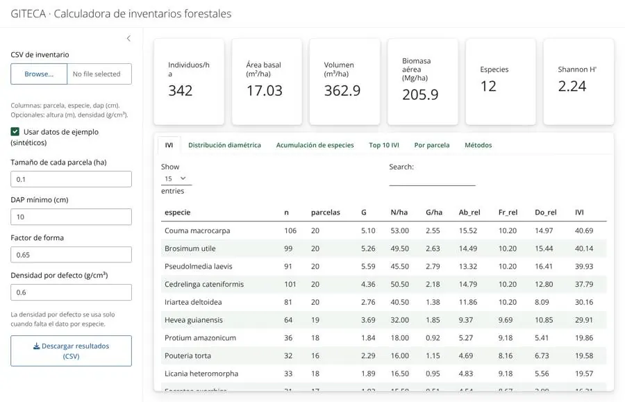
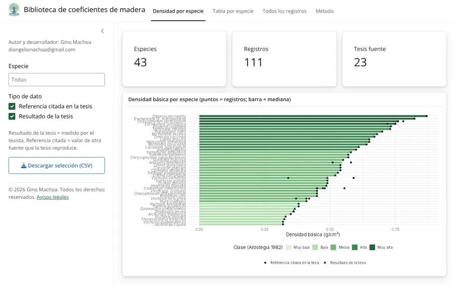

Proyectos abiertos · GITECA-appsHerramientas para investigar y gestionar el bosque
Aplicaciones de inventario, muestreo, coeficientes de madera y monitoreo satelital. Las de investigación se construyen sobre las 1 063 tesis de la Facultad de Ciencias Forestales de la UNAP (1984–2026). Código disponible para consulta; todos los derechos reservados.

Explorador de tesis FCF-UNAP
Buscador con filtros por escuela, tema, año y asesor; tendencias, términos frecuentes y red asesor–tesista.
Abrir app
Calculadora de inventarios
N/ha, área basal, volumen, IVI, Shannon y Simpson, curva de acumulación y biomasa aérea a partir de un CSV.
Abrir app
Planificador de muestreo
Número de parcelas necesario y error esperado según el coeficiente de variación de un inventario piloto.
Abrir app
Vacíos de investigación
Mapa de tesis por localidad y matriz localidad × tema para ubicar dónde falta estudiar.
Abrir app
Descarga gratis de imágenes Sentinel-2, Landsat y DEM
Nuevo · dibuja tu área, elige la imagen y descarga el GeoTIFF recortado: Sentinel-2 (10 m), Landsat 4–9 (30 m, desde 1982), NDVI y modelos de elevación Copernicus, NASADEM y ALOS. Sin registro; incluye scripts en R y Python para descarga masiva.
Abrir descargas
Observatorio de amenazas de la Amazonía peruana
Nuevo · actualización diaria con datos abiertos: creciente y vaciante de 10 ríos amazónicos frente a lo normal (inundación y sequía), focos de calor, peligro meteorológico de incendio y pérdida de bosque.
Abrir observatorio
Biblioteca de coeficientes de madera
Densidad básica, contracciones, relación T/R, MOE y MOR de 43 especies amazónicas, extraídos de 23 tesis FCF-UNAP, con enlace a cada fuente.
Abrir app
Diseño y planificación de inventarios forestales (PGMF)
Para titulares de títulos habilitantes y regentes: con un solo shapefile de tipos de bosque calcula superficies y el diseño de inventario (número, dimensiones, intensidad y distancia de parcelas), distribuye parcelas Este–Oeste por estrato y exporta parcelas y centroides en SHP, KML, Excel y GeoJSON. Incluye capa de prueba. Autor: Ing. Manuel Galán Gonzales, equipo GITECA. Referencia: RDE N.° 046-2016-SERFOR-DE.
Abrir app